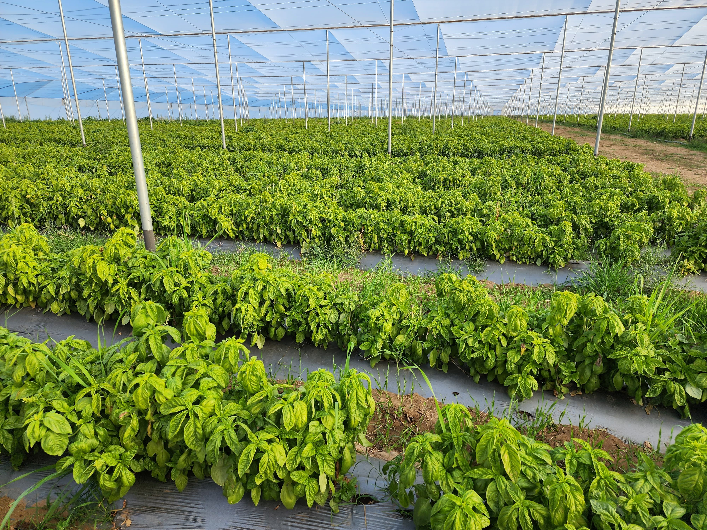

¿Quiénes
Somos?

Actualmente distribuimos productos producidos
en México, Estados Unidos, Chile, Argentina y
Peru; y tenemos presencia de venta en los
mercados de México, Estados Unidos y China.
mercados de México, de supermercados,
mercados de México, distribuidoras y mercados
de abasto.

Misión
Entregar una solución de nutrición global a clientes tecnificados de la República Mexicana,
que les permita maximizar la calidad y la producción de sus cultivos, para así obtener grandes
cosechas con un excelente retorno de su inversión.

Visión
Ser el proveedor preferido por los agricultores mexicanos para nutrir eficaz, eficiente y
sustentablemente sus cultivos. Ser un agente de capacitación, difusión y cambio a productos y
técnicas de nutrición más adecuados para cumplir con los fines productivos que el crecimiento
poblacional y el cuidado del planeta nos exigen. Generar beneficios a la sociedad y entorno en
el que participamos.

Valores
Honestidad: Promovemos la verdad como herramienta para generar confianza y credibilidad.
Calidad: Seleccionamos, buscamos, importamos y comercializamos siempre el mejor producto
existente en el mundo para el campo mexicano. Así mismo asesoramos a los agricultores con
profesionales altamente capacitados y que cuentan con herramientas tecnológicas para cumplir estos
objetivos.
Transparencia: Asumimos la responsabilidad y consecuencias de nuestros actos sin engaños;
generando confianza y seguridad con nuestro equipo de trabajo, clientes y proveedores.
Lo que hacemos

Producimos o buscamos los fertilizantes con la mayor concentración
de nutrientes y pureza para cumplir con los requerimientos de cada
tipo de cultivo.
Nuestro equipo está integrado por especialistas en nutrición, por lo
que sólo recomiendan fertilizantes adecuados a las necesidades de
cada agricultor.
Entregamos la herramienta de control en la nutrición a nuestros
clientes de cultivo tecnificado. Con ella, pueden medir la cantidad
de fertilizante de acuerdo a las características del cultivo y suelo.